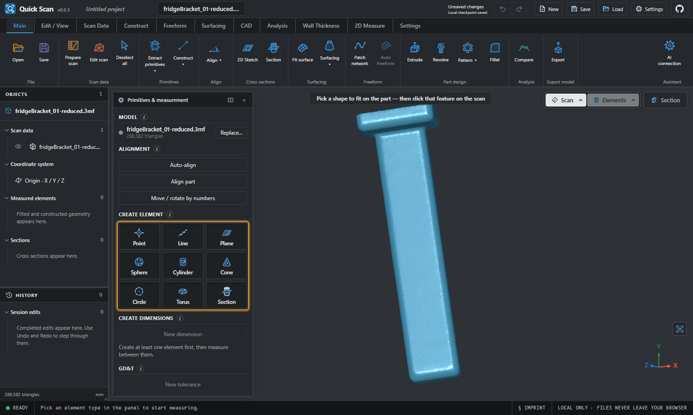
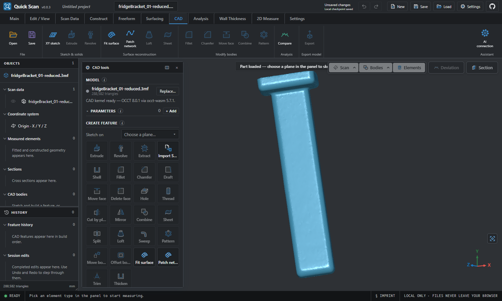

Fit primitives
Click a feature to get a best-fit plane, cylinder, cone, sphere, torus or circle with its form error.
Free · Open source · Windows
Quick Scan fits planes, cylinders and spheres to your 3D scans, measures between them, compares against CAD, and rebuilds the part as a clean model. It runs entirely on your computer.
Windows 10/11, 64-bit · v0.0.3 early release · AGPL-3.0

Click a feature to get a best-fit plane, cylinder, cone, sphere, torus or circle with its form error.
Auto-align from the scan's own faces, datum alignment, distance and angle dimensions, GD&T and tolerances.
Colour deviation plots, wall thickness maps and cross-sections measured on a 2D sheet.
Sketch, extrude, revolve, fillet, pattern and more on an exact OpenCASCADE kernel, with a feature history and STEP export.
Ribbon command tabs, an Objects / History explorer and movable, dockable tool panels that never lose your place.
Files are processed locally. An optional AI command interface lets an assistant you connect drive the same session.

Download Quick-Scan-Setup-0.0.3.exe from the latest release and run it. The installer needs no administrator rights by default.